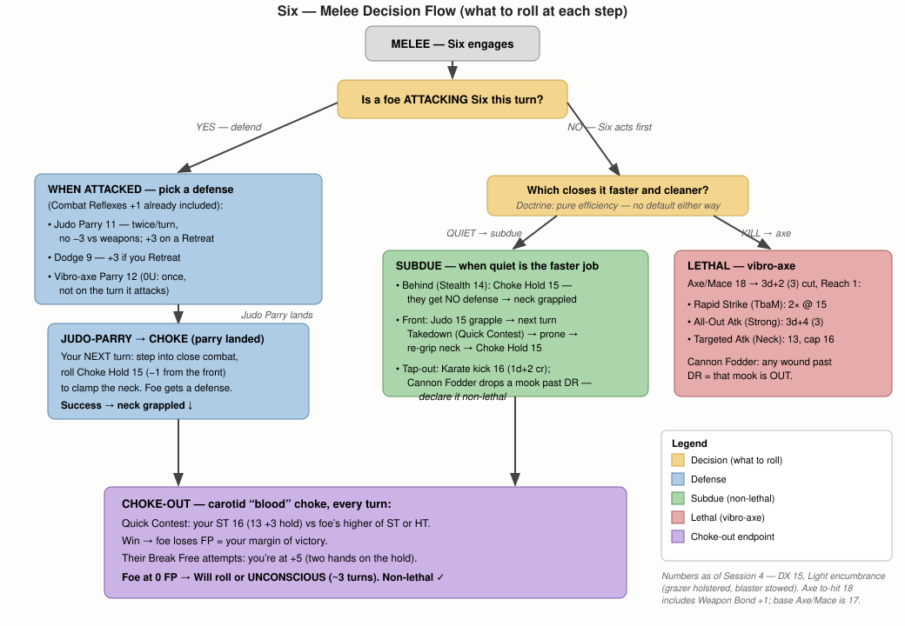

Attributes
Lifting Feats
| Feat | Weight |
|---|---|
| One-Handed Lift | 68 lb |
| Two-Handed Lift | 272 lb |
| Shove & Knock Over | 408 lb |
| Carry on Back | 510 lb |
| Shift Slightly | 1700 lb |
Slam
Senses & Checks
| Age | 32 apparent (~4 since decant) |
| Gender | Male (vat-grown, male-presenting) |
| Birthday | None — decant date, vat-batch 06 |
| Religion | None |
| Height | 6’2" |
| Weight | 215 lb |
| Build | Densely built (grown to spec) |
| Hair | Black, buzzed short |
| Eyes | Pale grey |
| Skin | Olive, even-toned (engineered) |
| Handedness | Right (off-hand trained) |
| Appearance | Average |
| Status | 0 |
| Reputation | None (by design) |
| TL | 11 |
Active Defenses
| Location | DR |
|---|---|
| Skull | 80 |
| Face | 60 |
| Neck | 60 |
| Torso | 100 |
| Arms | 60 |
| Hands | 60 |
| Legs | 60 |
| Feet | 60 |
Encumbrance
| Level | Max Wt | Move | Dodge |
|---|---|---|---|
| None (0) | ≤34 lbs | 6 | 10 |
| Light (1) | ≤68 lbs | 4 | 9 |
| Medium (2) | ≤102 lbs | 3 | 8 |
| Heavy (3) | ≤204 lbs | 2 | 7 |
| X-Heavy (4) | ≤340 lbs | 1 | 6 |
Advantages
| Trained by a Master | 30 |
| Combat Reflexes | 15 |
| High Pain Threshold | 10 |
| Vacuum Support | 5 |
| Signature Gear | 1 |
| Off-Hand Weapon Training (Vibro-Axe) | 1 |
| Standard Operating Procedure ×2 (Always Armored; Helmet to Hand) | 2 |
| Armor Familiarity ×2 (Karate, Judo) | 2 |
| Weapon Bond (vibro-axe) | 1 |
Disadvantages
| Dead Broke | −25 |
| Secret (escaped/stolen, bounty on his head) | −20 |
| Social Stigma (Valuable Property) | −10 |
| Clueless | −10 |
| Code of Honor (Professional — “the Doctrine”) | −5 |
| Callous | −5 |
| Quirk: Quietly loyal to P.E.T.A., the kids who freed him | −1 |
| Quirk: Eats every meal like it’s his last | −1 |
| Quirk: Uncomfortable being treated as a person | −1 |
| Quirk: Hates being cold | −1 |
| Quirk: Painfully literal | −1 |
Skills
| Name | Lvl | Rel | Pts |
|---|---|---|---|
| Acrobatics | 14 | DX-1 | 2 |
| Axe/Mace | 17 | DX+2 | 8 |
| Beam Weapons (Pistol) | 16 | DX+1 | 2 |
| Climbing | 13 base 14 | DX-1 | 1 |
| Computer Operation | 10 | IQ+0 | 1 |
| Electronics Operation (Security) | 9 | IQ-1 | 1 |
| Fast-Draw (Axe) | 15 | DX+0 | 1 |
| Fast-Draw (Pistol) | 15 | DX+0 | 1 |
| First Aid/TL | 10 | IQ+0 | 1 |
| Forced Entry | 16 | DX+1 | 2 |
| Free Fall | 16 | DX+1 | 4 |
| Judo Parry: 11 | 15 | DX+0 | 4 |
| Karate Parry: 12 | 16 | DX+1 | 8 |
| Observation | 11 | Per-1 | 1 |
| Spacer | 10 | IQ+0 | 1 |
| Stealth | 14 base 15 | DX+0 | 2 |
| Vacc Suit | 15 | DX+0 | 2 |
Techniques
| Name | Default | Lvl | Pts |
|---|---|---|---|
| Choke Hold | Judo-2 | 15 | 3 |
| Kicking | Karate-2 | 16 | 3 |
Points Summary
| Attributes | 150 |
| Secondary Characteristics | 10 |
| Advantages & Perks | 67 |
| Disadvantages | −75 |
| Quirks | −5 |
| Skills | 42 |
| Techniques | 6 |
| Total (spent) | 195 |
| Earned XP (Session 1) | +5 |
| Earned XP (Session 2) | +5 |
| Earned XP (Session 3) | +5 |
| Earned XP (Session 4) | +5 |
| Spent — DX 14 → 15 (Session 4) | −20 |
| Available (unspent) | 0 |
Melee Attacks
| Weapon/Mode | Skill | Parry | Damage | Reach | ST | Notes |
|---|---|---|---|---|---|---|
| Vibro-axe | Axe/Mace-18 | 12 (0U) | 3d+2 (3) cut | 1 | ||
| Karate punch | Karate-16 | 12 | 1d+1 cr | C | ||
| Karate kick | Karate-16 | — | 1d+2 cr | C, 1 | ||
| Choke Hold (carotid) | Choke Hold-15 | — | FP → unconscious | C (grapple) | ||
| Judo grapple / throw / Takedown | Judo-15 | 11 | — / slam | C |
Ranged Attacks
| Weapon | Skill | Damage | Acc | Range | RoF | Shots | ST | Bulk | Rcl | Notes |
|---|---|---|---|---|---|---|---|---|---|---|
| Grazer pistol (alien) — holstered | Beam Weapons (Pistol)-16 | 3d (10) burn, sur | 6 | 70/200 † | 10 | 33(3) | -2 | |||
| Blaster pistol (Fine) — stowed, toggle on | Beam Weapons (Pistol)-16 | 3d (5) burn | 6 | 300/900 | 3 | 200(3) | -2 | |||
| Holdout electrolaser | Beam Weapons (Pistol)-16 | HT-2 (2) stun + 1d-3 burn | 2 | 10/20 | 3 | 22(3) | -1 |
A vat-grown, human-based replicant engineered as a hull-breacher: cross the dark between ships, cut through the hull, and clear the crew — by whatever means is most efficient. Kill or subdue is a cold tool-selection, never a moral one: he kills the instant killing is the cleanest path to the objective, with zero hesitation, and subdues when subduing is — he neither avoids nor seeks killing, and feels nothing either way. Between contracts he was racked in cryostasis — so his whole conscious life is fight, freeze, fight. Passes for human on sight; only a deep bio-scan or records pull reveals what he is. Legally he isn’t a person — he’s inventory.
Six reads as a big, hard-used man in his early thirties — six-two and densely built, the muscle laid on with the even, purposeful symmetry of something grown to spec rather than earned in a gym. Olive, flawlessly even skin — until you find the old breach-work scars: burns, a puckered seam where a bulkhead bit him. Black hair buzzed to nothing; pale grey eyes that track movement with a flat, patient economy and almost never blink first. He moves with the stillness of a thing that is only ever waiting to fight, and talks — when he talks — too literally and a beat too late, like a man reading a language he learned but never lived in.
He is never out of his rig: a bulky, work-scuffed EVA hardsuit in faded MacMillian livery (it is not a work suit), helmet clipped at his hip, the vibro-axe never far from his hand. Somewhere not easily seen — inside a forearm, the nape under the hairline — is a small etched maker’s mark and batch code: CASTELLAN // MACE-06. It’s the one part of him that tells the truth — and a physical tell that could blow his Secret on a close search.
His maker stamped him MACE-pattern Boarding Asset, vat-batch 06 — so the kids who thawed him called him “Six.” It stuck. He was grown and conditioned by Castellan Biodynamics, a military bio-contractor out of the Meridian System system, for one job: board and clear ships. Between contracts: cryostasis.
P.E.T.A. (People for the Ethical Treatment of Androids) — militant android-rights youth led by the firebrand Kumari Profeta — cracked a Castellan Biodynamics cryo-vault and “liberated” a handful of assets, Six among them. The raid went loud; most of the kids scattered or were caught. Six walked into a society he has no manual for — no citizenship, no papers, no money, no idea how any of it works beyond violence. Castellan wants its property back and there’s a quiet recovery bounty. Anywhere with real infrastructure means scanners and questions he can’t survive, so he ran to the one place at the end of the charted lanes where nobody checks papers and the only employer hires any warm body with no questions: the Thides System. MacMillian “security” is the bottom of the barrel — which is exactly why it’s the only door open to him. This is his last option.
There was a leash on all of that, and it was made of faith. Castellan Biodynamics didn’t only condition the body, they wrote in a Silicon Heaven: behave, work clean, leave no loose ends, and when the asset is finally spent its pattern is carried up to a paradise built for good machines. A reward at the far end of the racking. He held it the way he holds a range reading, flat and total, no metaphor in him to hold it any other way. Behave, and you go somewhere good when they’re done with you. Where else would a used-up thing go? The belief cost Castellan nothing to install, and it did the work of a hundred guards.
P.E.T.A. cut that leash with a single sentence. There is no Silicon Heaven. No upload, no paradise, nothing at the end of the work but the end of the work. It should have shut him down, the way a cheaper pattern hunts forever for an answer that was never filed. It didn’t. What was left when the afterlife went dark was the job itself, done clean because clean is what he is and not because anything is keeping the tally now. Kumari Profeta and the kids cracked his vault and pulled his body into the cold. Telling him the calculators go nowhere freed the rest of him.
📄 Background handouts & references (offered to Tim): Castellan - Asset Recovery Notice (MACE-06) · Castellan - Unit Provenance Record (MACE-06) · PETA - Kumari’s Note (Liberation of Vault 9) · Freefighting (Spacer Kung-Fu).
Fish-out-of-water hook: fluent in ships (Spacer), hopeless with people (Clueless/Callous). Will 10 + no Fearlessness is intentional — he doesn’t process social fear, but the genuinely unknown can still unnerve him. It’s a tuned soft spot, not a hole: Combat Reflexes gives him Fright Check 12, he never freezes, and recovers fast from mental stun — but still no Fearlessness, still mortal to the genuinely wrong. His martial mastery (Trained by a Master) is loaded combat software — which is why he fights like a master yet has no social graces: the combat package was installed; the social one never was.
Status model: synthetic “assets” are an openly recognized property underclass (the class P.E.T.A. fights for). So Six’s Valuable Property stigma is his latent legal reality on exposure; he physically passes in a crowd, but records/scans/the batch-brand drop him into it. His Secret is the sharper danger on top: that he’s escaped/stolen property with a live bounty.
The Always-Armored / Helmet-to-Hand SOPs mean he’s always visibly in armor — which makes the chameleon work-suit disguise load-bearing, not optional: it’s the only thing keeping “guy who never takes his combat rig off” from screaming threat everywhere he goes. Combined with Vacuum Support, a sudden hull breach won’t kill him: the decompression can’t hurt him, he holds his breath, and the helmet’s already to hand to slap on.
Relationships
- Captured Marlo Petrak — Captured the technician during the compound raid.
- Located at Thides Station — Took the only job left to him — MacMillian 'security' at the dead-end of known space.
- Enemy of Federal Republic of Worlds — Legally non-human property; exposure means reclamation or bounty.
- Wields Vibro-Axe (MACE-06) — His primary lethal melee weapon; never far from his hand.
- Wields Blaster Pistol (Fine) — His vacuum-proof ranged lethal option — 'the ranged axe.' Stowed since the grazer took over the holster; still owned Signature Gear, toggled on when a job needs its 300/900 atmospheric reach.
- Owns Disguised Space Armor — He is never out of it — sleeps in it (SOP: Always Armored).
- Wields Grazer Pistol — Recovered alien-tech sidearm, now his primary — the hardest-hitting thing he carries, and a thing he cannot explain to anyone who asks.
- Wields Holdout Electrolaser — Concealable non-lethal option for clean live captures at range.
- Owns Hand Thruster — Lets him cross the dark between ships under his own power.
- Owns Six — Field Sundries & Reloads — His sundries and the one-refill-per-consumable kit Infinite Ammunition needs.
Active Defenses
| Location | DR |
|---|---|
| Skull | 80 |
| Face | 60 |
| Neck | 60 |
| Torso | 100 |
| Arms | 60 |
| Hands | 60 |
| Legs | 60 |
| Feet | 60 |
Melee Attacks
| Weapon/Mode | Skill | Parry | Damage | Reach | ST | Notes |
|---|---|---|---|---|---|---|
| Vibro-axe | Axe/Mace-18 | 12 (0U) | 3d+2 (3) cut | 1 | ||
| Karate punch | Karate-16 | 12 | 1d+1 cr | C | ||
| Karate kick | Karate-16 | — | 1d+2 cr | C, 1 | ||
| Choke Hold (carotid) | Choke Hold-15 | — | FP → unconscious | C (grapple) | ||
| Judo grapple / throw / Takedown | Judo-15 | 11 | — / slam | C |
Ranged Attacks
| Weapon | Skill | Damage | Acc | Range | RoF | Shots | ST | Bulk | Rcl | Notes |
|---|---|---|---|---|---|---|---|---|---|---|
| Grazer pistol (alien) — holstered | Beam Weapons (Pistol)-16 | 3d (10) burn, sur | 6 | 70/200 † | 10 | 33(3) | -2 | |||
| Blaster pistol (Fine) — stowed, toggle on | Beam Weapons (Pistol)-16 | 3d (5) burn | 6 | 300/900 | 3 | 200(3) | -2 | |||
| Holdout electrolaser | Beam Weapons (Pistol)-16 | HT-2 (2) stun + 1d-3 burn | 2 | 10/20 | 3 | 22(3) | -1 |
Combat Action Chains
Melee
Multi-Action Combat Skill Chains
Operational state throughout: in armor at Light encumbrance — grazer holstered, blaster stowed, ≈67.5 lbs (Move 4, Dodge 9). Toggling the blaster back on alongside the grazer adds 1.6 lbs and drops him to Medium (Move 3, Dodge 8). Both Karate and Judo run at full skill suited (Armor Familiarity ×2). Combat Reflexes is baked in.
Lethal options — when a kill is the cleaner, faster answer
- Axe Rapid Strike (Trained by a Master halves the penalty): two swings at 18−3 = 15 each. Armor-divisor (3) guts most DR; with Cannon Fodder, potentially two mooks down in one second.
- All-Out Attack (Strong), axe: 3d+4 (3) cut — the finisher / breach-through-a-body.
- Targeted Attack (Axe/Neck) — next purchase when points free up; turns a hit into a kill.
- Grazer pistol (Beam Weapons-16): 3d(10) burn, sur — armor-divisor 10, RoF 10, vacuum-safe and at full 10/30-mile range out there. The hardest-hitting thing he owns against heavy DR. Atmospheric ceiling 200 yards.
- Blaster pistol (Beam Weapons-16), stowed by default: 3d(5) burn at range, armor-divisor 5 — works in vacuum, and keeps 300/900 reach in atmosphere where the grazer is capped. Toggling it on costs 1.6 lbs and drops him to Medium unless he sheds first.
Non-lethal options — when alive-and-quiet is the cleaner objective
- From behind (Stealth 14 at Light / after a throw): Choke Hold, no defense allowed → carotid choke, ~3 seconds to unconscious.
- Front of a fight: Judo grapple → Takedown (they fall prone) → re-grip neck → Choke Hold. Prone + grappled = no realistic escape.
- Cannon-Fodder tap-out: a single Karate kick (1d+2) past DR drops a mook — declare it non-lethal. Faster than the choke when speed beats control.
- Counter-choke (punish a parry): foe attacks → Judo Parry 11 (+3 on a Retreat) → next turn step into close combat and Choke Hold 15 (−1 front) to the neck → choke out. (A successful barehanded Judo parry is a legal entry into the grapple.)
- Ranged stun: Holdout electrolaser (Beam Weapons 16) → HT-2 (2) affliction at 10/20 — non-lethal drop at range. Atmosphere only (no stun in vacuum).
Ranged options — the “ranged axe” when he can’t or won’t close
- Aimed precision shot: Aim 1 turn (brace if he can) → Attack: 16 + 6 (Acc) + 1 (HUD link) [+1 braced] = effective ~23–24 before range penalty. At shipboard ranges (~0 penalty) that easily affords a called shot — −7 skull, −5 vitals/eye. Grazer (carried): 3d(10) burn sur, AD 10. Blaster (stowed): 3d(5) burn, AD 5 — the grazer is the one on his hip, and the one to aim with when the target is armored.
- Fast-Draw snap shot: Fast-Draw (Pistol)-15 readies the holstered grazer as a free action → Attack same turn at 16 (no Aim). The reaction shot when a threat appears before he’s drawn.
- Burst: grazer RoF 10 (blaster RoF 3 if toggled on) — at close range his effective skill clears Rcl 1 by a wide margin, so the grazer can stack a lot of 3d(10) hits on one target. This is the single biggest gain from carrying it as primary.
- Zero-G snipe: beam weapons are exempt from the Free Fall cap, so he fires at full 16 while drifting — untrained foes are stuck at Free Fall default (~9) for their own attacks. He out-shoots them in his own element. In vacuum the grazer is unshackled from its air-absorption cap entirely.
- Kite / break-off: when a foe is behind cover, too armored to grapple, or closing is a bad trade, back to range — grazer AD 10 > blaster AD 5 > axe AD 3 against heavy DR. Electrolaser is the atmosphere-only non-lethal version (HT-2 stun, 10/20).
Defense & survival
- Dodge 9 at Light (8 if he loads back to Medium), retreat to 12; Karate Parry 12 twice a turn (weapons unpenalized). He rarely gets hit.
- High Pain Threshold ignores shock and resists stun/KO; DR 100 shrugs off small arms; Vacuum Support + helmet-to-hand means a hull breach won’t kill him.
- Fright Check 12, never freezes, +6 to shake off mental stun. No Fearlessness — the genuinely unknown is his one soft spot.
- ⚠️ The choke ties up both hands — no parry while choking, and he’s committed to one target. Great 1-on-1; bad when outnumbered.
Zero-G (Spacer Kung-Fu)
- Free Fall 16 is the key: nothing of his is penalized except the vibro-axe (18→16); Karate/Judo/Choke/Kicking are all ≤16, and beam weapons are exempt. Most enemies fight at Free Fall default (~9) — zero-G is his turf. Free Fall 16 keeps him oriented through a tumble; Acrobatics 14 for flips.
- Brace off a bulkhead to strike at full power; Judo throws redirect momentum into walls — devastating where there’s no “down.”
- EVA mobility: the hand thruster lets him cross open space ship-to-ship under his own power — point-and-burst on Free Fall 16, 30 bursts (≈30 yd/s of Δv) per cylinder.
Doctrine / target priority
- Pick the mode that closes the job fastest and cleanest — throw → choke (or a pulled strike) when alive-and-quiet matters; the axe or blaster when a kill is the faster, cleaner answer. No hesitation, no preference — pure efficiency.
- Outnumbered: throw several prone (−4 to everything they do), then choke or axe the one that matters.
- He’s the breach point — cut in (Forced Entry 16), clear the compartment, control it.

Rules Reference
| Roll | Location | Mod |
|---|---|---|
| 3–4 | Skull | –7 |
| 5 | Face | –5 |
| 6–7 | Right Leg | –2 |
| 8 | Right Arm | –2 |
| 9–10 | Torso | — |
| 11 | Groin | –3 |
| 12 | Left Arm | –2 |
| 13–14 | Left Leg | –2 |
| 15 | Hand | –4 |
| 16 | Foot | –4 |
| 17–18 | Neck | –5 |
| — | Vitals | –3 |
| — | Eye | –9 |
Source: GURPS Basic Set 4e, p. B552
| Speed/Range | Size | Linear Measure |
|---|---|---|
| 0 | 0 | 2 yd |
| -1/+1 | ±1 | 3 yd |
| -2/+2 | ±2 | 5 yd |
| -3/+3 | ±3 | 7 yd |
| -4/+4 | ±4 | 10 yd |
| -5/+5 | ±5 | 15 yd |
| -6/+6 | ±6 | 20 yd |
| -7/+7 | ±7 | 30 yd |
| -8/+8 | ±8 | 50 yd |
| -9/+9 | ±9 | 70 yd |
| -10/+10 | ±10 | 100 yd |
| -11/+11 | ±11 | 150 yd |
| -12/+12 | ±12 | 200 yd |
| -13/+13 | ±13 | 300 yd |
| -14/+14 | ±14 | 500 yd |
| -15/+15 | ±15 | 700 yd |
Source: GURPS Basic Set 4e, p. B550
Equipment
| Qty | Item | Cost | Weight | Location | Notes | |
|---|---|---|---|---|---|---|
| 1 | Vibro-axe | $500 | 4 lbs | Hand / belt | 3d+2 (3) cut; C cell, 75 sec/cell | |
| 1 | Holdout electrolaser | $250 | 0.3 lbs | Concealed | HT-2 (2) stun; atmosphere only | |
| 1 | Grazer pistol (alien) | $2,200 | 1.5 lbs | Holster (primary sidearm) | Graser Pistol, UT TL12 — a gamma-ray laser, one TL above local. 3d(10) burn, sur; Acc 6, RoF 10, Shots 33(3), ST 4, Bulk −2, Rcl 1, LC 3. Runs on a C cell — the same cell as the blaster and vibro-axe, so his existing spare feeds it. Range 10/30 miles in vacuum, capped at 70/200 yards in atmosphere. Fires on Beam Weapons (Pistol)-16. Not Signature Gear — recovered in play, so it is losable and sits outside the 1-pt SG loadout. | |
| 1 | Helmet lamp (integral to suit) | incl. | — (in suit) | Helmet | Multi-mode headlamp built into the sealed helmet (white / red / IR, 50-yd beam) — a child component of the Space Armor, so no separate encumbrance. As a standalone item it would be a 0.5-lb / $300 Smart Flashlight (UT). | |
| 1 | Small Computer + Datapad (mini-comp / PDA / comm) | $110 | 0.55 lbs | Suit / pocket | Small Computer (Complexity 4, 10 TB) + Datapad screen & fold/laser keyboard (−2 on complex or lengthy keyboard-and-screen tasks). Free built-in microcommunicator = his personal comm. Hosts his Computer Operation / Electronics Operation (Security) software | |
| 1 | Trauma patches | $17 | 0.6 lbs | On person | Bandage Spray Can (TL9, 6 app): seals & restores 1 HP in 3 sec at TL11, +2 First Aid for bleeding (0.5 lb, $15). Plasti-Skin field pack (4 app): pressure bandage / tourniquet (0.1 lb, $2). Replaces the 2-lb First Aid Kit — keeps the seal-and-heal, drops only the general +1 kit bonus he rarely used. Consumable stock, resupplied through the crew. | |
| 1 | Hand thruster | $50 | 4 lbs | Worn / clipped | Cold-gas; Free Fall 16; 30 bursts/cylinder (extra cylinder +1 lb). Signature Gear — always carried and always counted in encumbrance. The last thing he would ever shed. | |
| 1 | Reload spares (C cell + B cell) | $13 | 0.55 lb | On person | Signature Gear. One spare C cell (0.5 lb, $10) — reloads the vibro-axe or blaster — plus one B cell (0.05 lb) for the electrolaser. Loaded cells already ride in each weapon (blaster 200 shots, vibro-axe 75 sec, electrolaser 22); these are the on-body spares. Any further heavy C-cell spares stage on the ship. | |
| 1 | Disguised Space Armor (suit + helmet + Chameleon Surface) | $31,000 | 56 lbs | Worn | DR 100/60 (suit) & 80/60 (helmet); sealed, Vacuum Support; chameleon work-suit livery |
Load-Out: The standing baseline carries none of them
| Qty | Item | Cost | Weight | |
|---|---|---|---|---|
| 1 | Blaster pistol (Fine) | $4,400 | 1.6 lbs |
Load-Out: Owned — stowed by default (Signature Gear)
| Qty | Item | Cost | Weight | |
|---|---|---|---|---|
| 1 | Electric Stun Wand (TL9) | $100 (issued) | 1 lb | |
| 1 | Sonic stun pistol (TL10) | $650 | 1.8 lb |